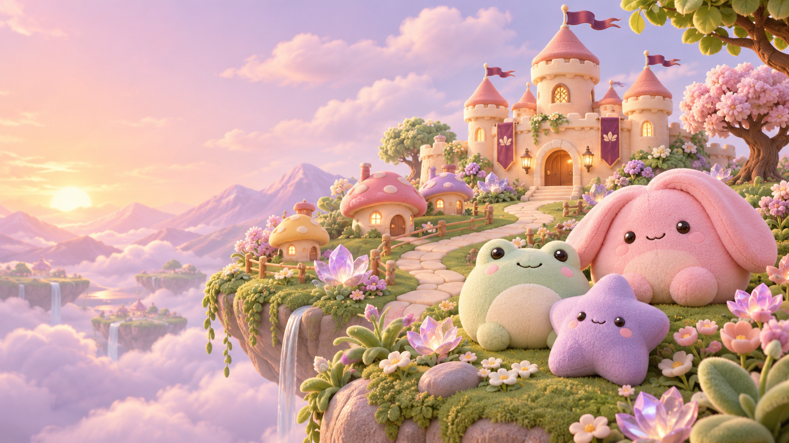

Soft by nature.
Plush characters, springy steps, and a satisfying little squish. An example of the live page's feature treatment.
LANDING PAGE · DESIGN DIRECTION
A tactile miniature world. Warm cream, thoughtful plum, soft rose and garden sage. Spacious editorial type meets playful, real 3D characters.
Collect little wonders. Find your people. Leave a little room for play.
Plush characters, springy steps, and a satisfying little squish. An example of the live page's feature treatment.

Preserved identity: original crown mark, the existing kingdom artwork, and the game's plush character models. Live 3D motion replaces the unavailable Higgsfield footage with the user's approval.